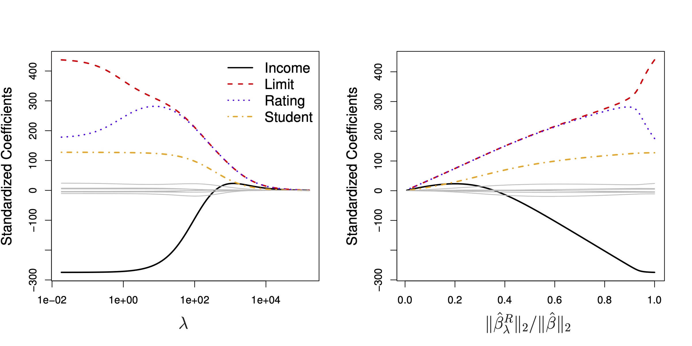
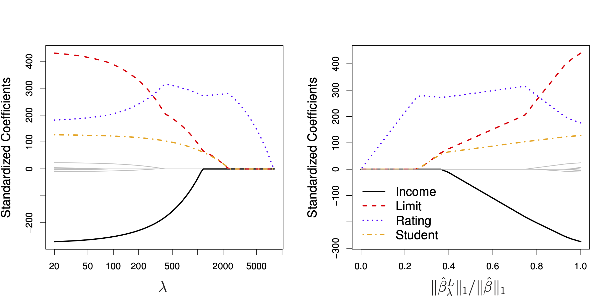
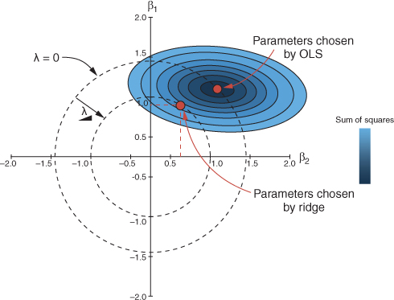

library(tidymodels)
library(tictoc) # Zeitmessung12 Regularisierte Modelle
12.1 Lernsteuerung
12.1.1 Lernziele
- “Sie können Algorithmen für regularisierte lineare Modell erklären, d.h. Lasso- und Ridge-Regression”
- “Sie wissen, anhand welche Tuningparamter man Overfitting bei diesen Algorithmen begrenzen kann”
- “Sie können diese Verfahren in R berechnen”
12.1.2 Literatur
- “Rhys, Kap. 11”
12.1.3 Hinweise
“Rhys und ISLR sind eine gute Quelle zum Einstieg in das Thema.
12.1.4 R-Pakete
In diesem Kapitel werden folgende R-Pakete benötigt:
12.2 Regularisierung
12.2.1 Was ist Regularisierung?
Regularisieren verweist auf “regulär”; laut Duden bedeutet das Wort so viel wie “den Regeln, Bestimmungen, Vorschriften entsprechend; vorschriftsmäßig, ordnungsgemäß, richtig” oder “üblich”.
Im Englischen spricht man auch von “penalized models”, “bestrafte Modell” und von “shrinkage”, von “Schrumpfung” im Zusammenhang mit dieer Art von Modellen.
Regularisierung ist ein Meta-Algorithmus, also ein Verfahren, was als zweiter Schritt “auf” verschiedene Modelle angewendet werden kann - zumeist aber auf lineare Modelle, worauf wir uns im Folgenden konzentrieren.
Das Ziel von Regularisierung ist es, Overfitting zu vermeiden, in dem die Komplexität eines Modells reduziert wird. Der Effekt von Regularisierung ist, dass die Varianz der Modelle verringert wird und damit das Overfitting. Der Preis ist, dass der Bias erhöht wird, aber oft geht die Rechnung auf, dass der Gewinn größer ist als der Verlust.
Im Kontext von linearen Modellen bedeutet das, dass die Koeffizienten (\(\beta\)s) im Betrag verringert werden durch Regularisierung, also in Richtung Null “geschrumpft” werden.
Dem liegt die Idee zugrunde, dass extreme Werte in den Koeffizienten vermutlich nicht “echt”, sondern durch Rauschen fälschlich vorgegaukelt werden.
Die bekanntesten Vertreter dieser Modellart sind Ridge Regression, \(L2\), das Lasso, \(L1\), sowie Elastic Net.
12.2.2 Ähnliche Verfahren
Ein ähnliches Ziel wie der Regulaisierung liegt dem Pruning zugrunde, dem nachträglichen Beschneiden von Entscheidungsbäumen. In beiden Fällen wird die Komplexität des Modells verringert, und damit die Varianz auf Kosten eines möglichen Anstiegs der Verzerrung (Bias) des Modells. Unterm Strich hofft man, dass der Gewinn die Kosten übersteigt und somit der Fit im Test-Sample besser wird.
Eine Andere Art der Regularisierung wird durch die Verwendung von Bayes-Modellen erreicht: Setzt man einen konservativen Prior, etwa mit Mittelwert Null und kleiner Streuung, so werden die Posteriori-Koeffizienten gegen Null hin geschrumpft werden.
Mit Mehrebenen-Modellen (Multi Level Models) lässt sich ein ähnlicher Effekt erreichen.
12.2.3 Normale Regression (OLS)
Man kann sich fragen, warum sollte man an der normalen Least-Square-Regression (OLS: Ordinary Least Square) weiter herumbasteln wollen, schließlich garantiert das Gauss-Markov-Theorem, dass eine lineare Regression den besten linearen unverzerrten Schätzwert (BLUE, best linear unbiased estimator) stellt, vorausgesetzt die Voraussetzungen der Regression sind erfüllt.
Ja, die Schätzwerte (Vorhersagen) der Regression sind BLUE, schätzen also den wahren Wert korrekt und maximal präzise. Das gilt (natürlich) nur, wenn die Voraussetzungen der Regression erfüllt sind, also vor allem, dass die Beziehung auch linear-additiv ist.
Zur Erinnerung, mit OLS minimiert man man den quadrierten Fehler, \(RSS\), Residual Sum of Square:
\[RSS = \sum_{i=1}^n \left(y_i - \beta_0 - \sum_{j=1}^p \beta_j x_{ij} \right)\]
Man sucht also diejenigen Koeffizientenwerte \(\beta\) (Argumente der Loss-Funktion RSS), die RSS minimieren:
\[\beta = \underset {\beta}{\operatorname {arg\,min(RSS)}}\]
Es handelt sich hier um Schätzwerte, die meist mit dem Hütchen \(\hat{\beta}\) ausgedrückt werden, hier aber zur einfacheren Notation weggelassen sind.
Abb. Abbildung 12.1 visualisiert die Optimierung mit OLS Quelle. An gleicher Stelle findet sich eine gute Darstellung zu den (mathematischen) Grundlagen der OLS-Regression.
.gif)
Übrigens nennt man Funktionen, die man minimiert mit Hilfe von Methoden des maschinellen Lernens mit dem Ziel die optimalen Koeffizienten (wie \(\beta\)s) zu finden, auch Loss Functions (Kostenfunktion).
Das Problem der Regression ist, dass die schöne Eigenschaft BLUE nur im Train-Sample, nicht (notwendig) im Test-Sample gilt.
12.3 Ridge Regression, L2
12.3.1 Strafterm
Ridge Regression ist sehr ähnlich zum OLS-Algorithmus, nur das ein “Strafterm aufgebrummt” wird, der \(RSS\) erhöht.
Der Gesamtterm, der optimiert wird, \(L_{L2}\) (Loss Level 2) ist also die Summe aus RSS und dem Strafterm:
\[L_{L2} = RSS + \text{Strafterm}\]
Der Strafterm ist so aufgebaut, dass (im Absolutbetrag) größere Koeffizienten mehr zum Fehler beitragen, also eine Funktion der (quadrierten) Summe der Absolutwerte der Koeffizienten:
\[\text{Strafterm} = \lambda \sum_{j=1}^p \beta_j^2\]
Man nennt den L2-Strafterm auch L2-Norm1.
Dabei ist \(\lambda\) (lambda) ein Tuningparameter, der bestimmt, wie stark die Bestrafung ausfällt. Den Wert von \(\lambda\) lassen wir durch Tuning bestimmen, wobei \(\lambda \in \mathbb{R}^+\setminus\{0\}\). Es gilt: Je größer lambda, desto stärker die Schrumpfung der Koeffizienten gegen Null, da der gesamte zu minimierende Term, \(L_{L2}\) entsprechend durch lambda vergrößert wird.
Der Begriff “L2” beschreibt dass es sich um eine quadrierte Normierung handelt.
Der Begriff “Norm” stammt aus der Vektoralgebra. Die L2-Norm eines Vektors \(||v||\) mit \(k\) Elementen ist so definiert Quelle:
\[||v|| = \left(|{v_1}|^2+ |{v_2}|^2+ |{v_i}|^2+ \ldots + |{v_k}|^2 \right)^{1/2} \] wobei \(|{v_i}|\) den Absolutwert (Betrag) meint de Elements \(v_i\) meint. Im Falle von reellen Zahlen und Quadrierung braucht es hier die Absolutfunktion nicht.
Im Falle von zwei Elementen vereinfacht sich obiger Ausdruck zu:
\[||v|| = \sqrt{\left({v_1}^2+ {v_2}^2\right)} \]
Das ist nichts anderes als Pythagoras’ Gesetz im euklidischen Raum.
Der Effekt von \(\lambda \sum_{j=1}^p \beta_j^2\) ist wie gesagt, dass die Koeffizienten in Richtung Null geschrumpft werden. Wenn \(\lambda = 0\), resultiert OLS. Wenn \(\lambda \rightarrow \infty\), werden alle Koeffizienten auf Null geschätzt werden, Abb. Abbildung 12.2 verdeutlicht dies (James u. a. 2021).

12.3.2 Standardisierung
Die Straftermformel sagt uns, dass die Ridge-Regression abhängig von der Skalierung der Prädiktoren ist. Daher sollten die Prädiktoren vor der Ridge-Regression zunächst auf \(sd=1\) standardisiert werden. Da wir \(\beta_0\) nicht schrumpfen wollen, sondern nur die Koeffizienten der Prädiktoren bietet es sich an, die Prädiktoren dazu noch zu zentieren. Kurz: Die z-Transformation bietet sich als Vorverarbeitung zur Ridge-Regression an.
12.4 Lasso, L1
12.4.1 Strafterm
Der Strafterm in der “Lasso-Variante” der regularisierten Regression lautet so:
\[\text{Strafterm} = \lambda \sum_{j=1}^p |\beta_j|,\]
ist also analog zur Ridge-Regression konzipiert.
Genau wie bei der L2-Norm-Regularisierung ist ein “guter” Wert von lambda entscheidend. Dieser Wert wird, wie bei der Ridge-Regression, durch Tuning bestimmt.
Der Unterschied ist, dass die L1-Norm (Absolutwerte) und nicht die L2-Norm (Quadratwerte) verwendet werden.
Die L1-Norm eines Vektors ist definiert durch \(||\beta||_1 = \sum|\beta_j|\).
12.4.2 Variablenselektion
Genau wie die Ridge-Regression führt ein höhere lambda-Wert zu einer Regularisierung (Schrumpfung) der Koeffizienten. Im Unterschied zur Ridge-Regression hat das Lasso die Eigenschaft, einzelne Parameter auf exakt Null zu schrumpfen und damit faktisch als Prädiktor auszuschließen. Anders gesagt hat das Lasso die praktische Eigenschaft, Variablenselektion zu ermöglichen.
Abb. Abbildung 12.3 verdeutlicht den Effekt der Variablenselektion, vgl. James u. a. (2021), Kap. 6.2. Die Ellipsen um \(\hat{beta}\) herum nent man Kontourlinien. Alle Punkte einer Kontourlinie haben den gleiche RSS-Wert, stehen also für eine gleichwertige OLS-Lösung.

Warum erlaubt die L1-Norm Variablenselektion, die L2-Norm aber nicht? Abb. Abbildung 12.4 verdeutlicht den Unterschied zwischen L1- und L2-Norm. Es ist eine Regression mit zwei Prädiktoren, also den zwei Koeffizienten \(\beta1, \beta_2\) dargestellt.
Betrachten wir zunächst das rechte Teilbild für die L2-Norm aus Abb. Abbildung 12.4, das in Abb. Abbildung 12.5 in den Fokus gerückt wird (Rhys 2020).

Wenn lambda gleich Null ist, entspricht \(L_{L2}\) genau der OLS-Lösung. Vergrößert man lambda, so liegt \(L_{L2}\) dem Schnittpunkt des OLS-Kreises mit dem zugehörigen lambda-Kreis. Wie man sieht, führt eine Erhöhung von lambda zu einer Reduktion der Absolutwerte von \(\beta_1\) und \(\beta_2\). Allerdings werden, wie man im Diagramm sieht, auch bei hohen lambda-Werten die Regressionskoeffizienten nicht exakt Null sein.
Warum lässt die L2-Norm für bestimmte lambda-Werte den charakteristischen Kreis entstehen? Die Antwort ist, dass die Lösungen für \(\beta_1^2 + \beta_2^2=1\) (mit \(\lambda=1\)) graphisch als Kreis dargestellt werden können.
Anders ist die Situation bei der L1-Norm, dem Lasso, vgl. Abb. Abbildung 12.6.

Eine Erhöhung von $ führt aufgrund der charakteristischen Kontourlinie zu einem Schnittpunkt (von OLS-Lösung und lambda-Wert), der - wenn lambda groß genug ist, stets auf einer der beiden Achsen liegt, also zu einer Nullsetzung des Parameters führt.
Damit kann man argumentieren, dass das Lasso implizit davon ausgeht, dass einige Koeffizienten in Wirklichkeit exakt Null sind, die L2-Norm aber nicht.
12.5 L1 vs. L2
12.5.1 Wer ist stärker?
Man kann nicht sagen, dass die L1- oder die L2-Norm strikt besser sei. Es kommt auf den Datensatz an. Wenn man einen Datensatz hat, in dem es eingie wenige starke Prädiktoren gibt und viele sehr schwache (oder exakt irrelevante) Prädiktoren gibt, dann wird L1 tendenziell zu besseren Ergebnissen führen(James u. a. 2021, 246). Das Lasso hat noch den Vorteil der Einfachheit, da weniger Prädiktoren im Modell verbleiben.
Ridge-Regression wird dann besser abschneiden (tendenziell), wenn die Prädiktoren etwa alle gleich stark sind.
12.5.2 Elastic Net als Kompromiss
Das Elastic Net (EN) ist ein Kompromiss zwischen L1- und L2-Norm. \(\lambda\) wird auf einen Wert zwischen 1 und 2 eingestellt; auch hier wird der Wert für \(\lambda\) wieder per Tuning gefunden.
\[L_{EN} = RSS + \lambda\left((1-\alpha))\cdot \text{L2-Strafterm} + \alpha \cdot \text{L1-Strafterm}\right)\]
\(\alpha\) ist ein Tuningparameter, der einstellt, wie sehr wir uns Richtung L1- vs. L2-Norm bewegen. Damit wird sozusagen die “Mischung” eingestellt (von L1- vs. L2).
Spezialfälle:
- Wenn \(\alpha=0\) resultiert die Ridge-Regression (L1-Strafterm wird Null)
- Wenn \(\alpha=1\) resultiert die Lasso-Regression (L2-Strafterm wird Null)
12.6 Aufgaben
Streng genommen ist er eine Funktion der L2-Norm bzw. mit Lambda-Gewichtet und ohne die Wurzel, die zur Vektornorm gehört↩︎